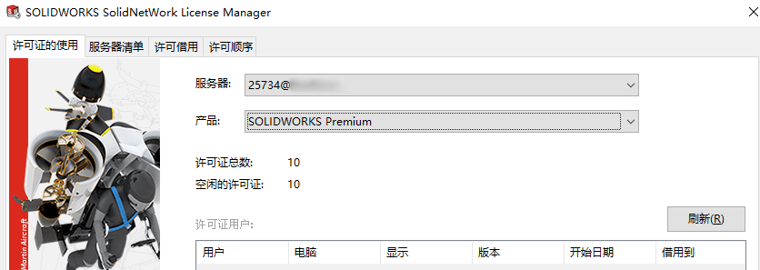

网络版许可连接
无网络连接
原因：网络版正版用户，因许可服务器访问问题。一般会是检查与许可服务器的通信、防火墙问题，（了解许可问题是否只存在特定电脑）
1、在服务器端确保’FlexNet Licensing Service’ 和 ‘SolidNetWork License Service’这两个服务是正常运行的。
2、尝试客户机——服务器互ping测试，确保客户端可以ping通服务器。
3、在服务器上的防火墙设置中，新建出站和入站规则，确保开通25734和25735两个端口。确保telnet <IP> 25734接通。
4、可以在【控制面板\系统和安全\Windows Defender 防火墙\自定义设置】尝试关闭防火墙，
服务器节点出现故障或没有响应
SOLIDWORKS® 无法在 SolidNetwork 许可环境中启动。用户将看到错误 -96“服务器节点出现故障或没有响应”。
1.核实 SolidNetWork 许可管理程序是否已启动，并检查“许可证的使用”选项卡以确保有免费的许可可用。
2.在客户端上，单击“开始”>“程序”>“SolidWorks <年份> /SolidWorks 工具”>“SolidNetWork License Administrator”。
3.检查“许可证的使用”选项卡，以查看 SOLIDWORKS 是否确认有免费的许可。 如果没有免费的许可，则检查客户端与服务器之间的 TCP/IP 连接。 必须运行两种测试，以核实这一点。
首先，在客户端机器上打开 DOS 提示符并执行以下操作：
1.键入 ping 必须接收到一条信息，告知 Ping 成功。
2.远程登录 <服务器名称> <端口号> ，其中 <端口号> 是 SolidNetWork 许可管理程序使用的端口。 默认端口值为“25734”。
如果连接成功，DOS 提示符将变为空白，仅显示一个闪烁的光标 这两种测试都必须通过。 如果任一测试或两种测试都失败，则客户端与服务器之间没有足够的 TCP/IP 连接供 SolidNetWork 许可环境正常运行。
遇到 SolidNetWork License (SNL) Manager 方面的问题时要检查些什么？
1.检查是否可从客户端对服务器执行 ping 命令。在客户端机器上打开 DOS 提示符并键入：ping 。必须接收到一则信息，通知您 ping 已成功。
2.检查是否可远程登录到服务器。在客户端上打开 DOS 提示符并输入：Telnet 其中 是由 SolidNetWork License Manager 使用的端口。默认端口值为“25734”。如果连接成功，DOS 提示符将变为空白，仅显示一个闪烁的光标
3.检查是否已正确读入许可文件。对于 SolidWorks 2010 或更高版本，检查 SNL 许可是否已激活。
4.检查是否已启动 SNL Manager。
5.通过许可管理员和/或 HKEY_LOCAL_MACHINE\SOFTWARE\FLEXlm License Manager\SW_D_license_file 检查客户端是否指向正确的服务器。确保服务器名称和端口拼写正确。
6.检查服务器上的防火墙没有打开或已将端口定义为允许 SNL Manager 运行（请查看 \Docs\english\netlicguide.htm 中称为“SNL 和防火墙”的部分）
7.确保客户端机器上的 SNL Administrator 的版本和 Service Pack 与服务器上的相同。
8.核实服务器上是否使用选项文件。
9.SNL 管理器是否安装在受支持的 Microsoft® Windows® 操作系统上？
10.核实是否已借用任何许可。
11.核实停止 SNL Manager、重命名现有 sw_d.lic 文件、再次读入许可及重新启动 SNL Manager 是否可解决问题（SolidWorks 2009 及更早版本）。
12.在取消选中客户端机器上所有插件的情况下进行测试。
13.核实客户是否具有适用于已安装的 SolidWorks 版本的正确版本的许可文件（SolidWorks 2009 及更早版本）。
14.测试该问题针对特定用户还是所有用户发生。核实该问题针对一台机器还是所有机器发生。
15.检查以下位置是否不存在名为 SolidWorksStandaloneLic.lic 的文件：
C:\Documents and Settings\All Users\Application Data\SolidWorks
16.将客户端上服务器的地址指定为 <端口号> @ <服务器 ip 地址>
如果问题仍然存在，请从 SNL Manager 安装文件夹中获取 sw_d.lic 文件、lmgrd.log；对于 SolidWorks 2009 或更早版本，还需获取您收到的原始 .txt 文件。另请尝试获取启动客户端时您收到的所有错误信息的屏幕截图，以及显示从 dongle 读取的 Flex-ID 的屏幕截图。
-
无法获得许可
无空闲许可
1、检查客户端许可打开【开始\菜单–SOLIDWORK 工具20XX-SolidNetWork License Manager Client】，检查“许可的使用”是否正常有空闲许可证。
如果无许可证，则需检查“服务器”的连接问题。
正盗版混用
原因：正版与盗版混用,一般会提示“此SOLIDWORKS版本尚未被适当当地授权，请联系您的供应商”。可检查当前序列号的情况。
步骤：
1、一般会是安装盗版插件时注册表序列号被更改导致（已发现GearTax插件会出现此问题）。
2、进入注册表路径位置“计算机\HKEY_LOCAL_MACHINE\SOFTWARE\SolidWorks\Licenses\Serial Numbers”
3、将SolidWorks序列号改回正版序列号，并打开SW软件激活即可。
许可错误
如果在同时用作 SolidNetWork 许可证 (SNL) 服务器和客户端的计算机上打开 SOLIDWORKS 时收到许可错误消息，计算机可能具有无效或已过期的临时 .lic 文件。
方法
1.在 Windows文件资源管理器中，浏览到 (若无该文件夹，则需在文件资源管理器【查看-选项中】设置显示隐藏的文件和文件夹
1 | “C:\ProgramData\SolidWorks\SolidWorksStandaloneLic.lic”。 |

2.如果您看到任何具有“.lic”文件扩展名的文件，请将其重命名。
3.重新启动 SOLIDWORKS
此问题的其他症状包括：
- • 您收到“独立许可证故障”或“无法获得许可证”错误。
- • 使用 SOLIDWORKS 序列号的独立激活时，不提示激活许可证。
- • 在您转至“帮助”>“激活许可证”时没有任何反应